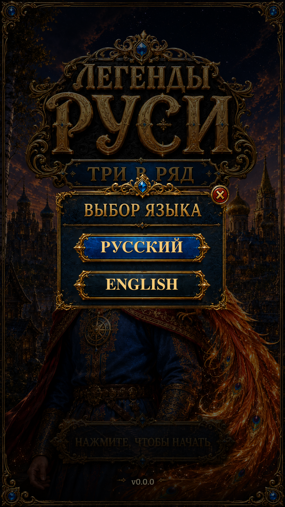

The selector now reuses the current approved Splash backdrop and Settings modal, with consistent native button press feedback.
Russian and English selection uses the existing saved language preference. The backdrop is non-interactive, and Close returns to the originating page. The original reference shows Settings behind the modal; this separate startup route intentionally uses Splash. Unity views are actual Play Mode captures with isolated saves and simulated phone dimensions/safe areas; reference and previous-version views are labelled separately.

Changes and validation · Remaining reference differences · Verification results